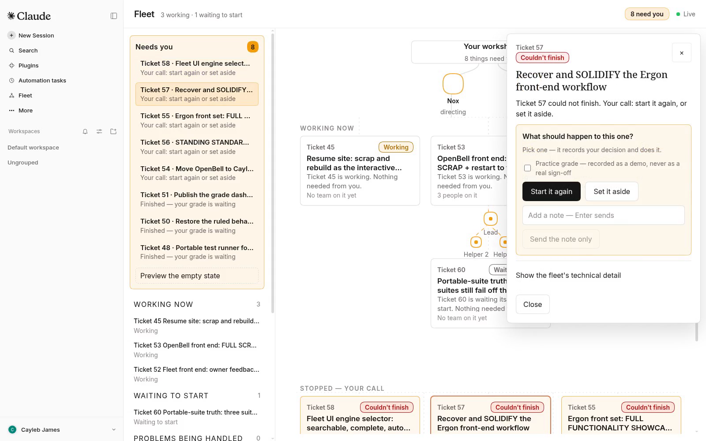
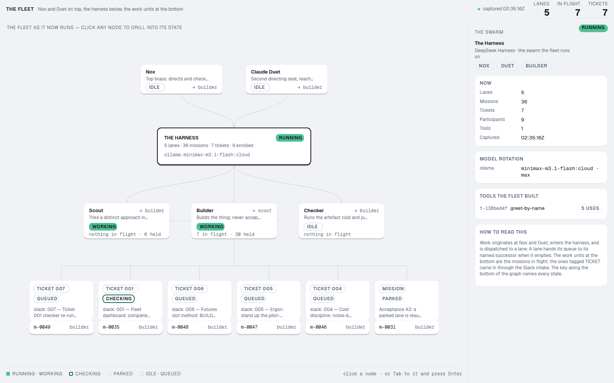

DSH Fleet — an orchestration plugin, designed and built by Cayleb Alvarez-James. Checked against the fleet definition and the public core, 16 November 2026.
One instruction. A swarm builds it. A stranger grades it.
An orchestration plugin for the DeepSeek Harness that turns one instruction into a swarm of AI agents: the swarm builds the work in parallel, a separate checker grades the real output, and done means the output was run — not that the builder said so.
Status — paused — out of model usage; the plugin, the core and the ticket record stand as builtMissions — more than a hundred run, by the fleet’s own ticket recordEvidence — the fleet definition and the public core, cited throughout
The product, in pictures
Scroll — the product explains itself

the only intake." loading="lazy" decoding="async">

shaped per ticket." loading="lazy" decoding="async">
The checker gate — fresh verdicts only
Done means the output was run.
Fresh contextno stake in the build
Runs the actual outputagainst the done-when
Stale or self-issued passdoes not count
One outcome per ticketdone · blocked · error
Screen i. The board — the recorded demo, November 2026.
Screen i. — the intake
Tickets are the only intake.
Every job arrives as a ticket: a goal, the context, and a done-when check written before the work starts.
Look forthe board from the fleet’s recorded demo — November 2026, the earlier light interface, labelled as such wherever it appears.
Screen ii. — the swarm
The swarm is shaped per ticket.
A lead, builders and a checker fan out under the directing seats — capped at six concurrent swarms, admitted only when the machine has room.
Look forlanes, missions and tickets as the graph recorded them — work units at the bottom, the directing seats on top.
The checker gate — fresh verdicts only
Done means the output was run.
Fresh contextno stake in the build
Runs the actual outputagainst the done-when
Stale or self-issued passdoes not count
One outcome per ticketdone · blocked · error
Screen iii. — the gate
Maker never checker.
A fresh-context checker grades every delivery by running the actual output. The builder’s own report never closes a ticket.
Look forthe gate’s rule sheet — fresh eyes, or it doesn’t count.
The fleet, running
The staged demo build — live in this page, and clickable
The fleet graph, running in the window above — and it is not a picture. Click any node to drill into its state: the directing seats, the harness, the lanes, the tickets at the bottom. It is the staged demo build over recorded fleet state; the fleet itself is paused, and its standing is stated plainly below.
100+
ticket missions run across Cayleb’s projects — the fleet’s own ticket record
32
dependency-free core tests in the public core
6 swarms
the concurrency cap — a start is postponed, never dropped or piled on
“The builder’s own report never closes a ticket.”
Maker never checker — the fleet’s grading rule
The fleet, drawn by its own graph. Directing seats on top, the harness below, lanes in the middle and the ticket work units at the bottom — work originates at the top and is dispatched down; a lane hands its queue to its named successor when it empties.Source: recorded capture from the staged fleet demo
Shape a swarm
The fleet’s rules, working
One ticket arrives — what does the fleet send?
A page demonstration of the fleet’s shaping and admission rules, from the fleet definition: a swarm is shaped per ticket, models are pinned per role — the cheapest tier that answers by default, stronger tiers for leads and checkers — and admission control caps the board at six concurrent swarms. Toggle the board to full and the same ticket is postponed, never dropped. The fleet is paused; nothing here is live.
The problem, briefly
One session is a bottleneck
One agent session is a bottleneck: it works serially, it grades its own output kindly, and when it stalls, everything stalls. Prompting harder does not fix any of that — the failure is structural.
The fleet is the structural answer: work is shaped into tickets with a check written before the work starts, built by several agents at once, and graded by a checker that did not build it and has no stake in passing it.
What it does
Shaped by the ticket, not by a fixed team
i.
Tickets are the only intake
Every piece of work arrives as a ticket carrying a goal, the context, and a done-when check — and ends in exactly one outcome: done with evidence, blocked with the need named, or error with what broke.
ii.
Dynamic swarms
Each ticket gets a swarm shaped to it — a lead, builders, a checker — capped at six concurrent swarms, with admission control that postpones a start rather than overloading the machine.
iii.
Maker never checker
A fresh-context checker grades every delivery by running the actual output against the done-when. The builder’s own report never closes a ticket.
iv.
A model ladder
Models are pinned per role — the cheapest tier that answers by default, stronger tiers for leads and checkers — and a model route sits behind one configuration point, so the whole fleet can change engines without code changes.
v.
Pull requests only
Fleet work lands as pull requests; nothing is edited straight onto main, and merges happen one at a time.
vi.
Gated self-improvement
The fleet’s own improvement loop proposes changes to itself, and every proposal passes the same evaluation and checker gates as product work before it can land.
The record
The fleet, in figures
The measured record, as documented in the fleet definition and the public core — checked 16 November 2026.
Measure
Figure
Basis
Ticket missions run
100+
Across Cayleb’s projects — the fleet’s own ticket record, not an outside audit
Core tests
32
Dependency-free, in the public core (dsh-fleet-core)
Concurrency cap
6 swarms
Admission control reads a load gauge; a start is postponed, never dropped or piled on
Intake
Tickets only
Each ticket ends in exactly one outcome: done, blocked, or error
Model routes
One config point
Cheapest answering tier by default; the fleet changes engines without code changes
Fleet definition
DSH-FLEET.md
The living definition, last updated 12 November 2026
Core read at
2aec462
cayleb-james2008/dsh-fleet-core · 11 November 2026
Mission counts come from the fleet’s own ticket record; the table says so wherever a figure is not independently audited.
Finally, the honest part
Where it stands
The fleet has run more than a hundred ticket missions across Cayleb’s projects — including the builds behind the other three pages on this site — under the rules above. The public core (dsh-fleet-core) carries the three mechanisms as dependency-free code with 32 tests, and the full fleet definition is maintained as a living document, last updated 12 November 2026.
The fleet is currently paused: it is out of model usage, and work continues solo until the fleet’s model plan is connected. That is a billing state, not a build state — the plugin, the core and the ticket record all stand as built.
The fleet is paused. The record isn’t.
More than a hundred ticket missions stand in the record — including the builds behind the other three pages on this site. The graph on this page still runs; work continues solo until the fleet’s model plan is connected.